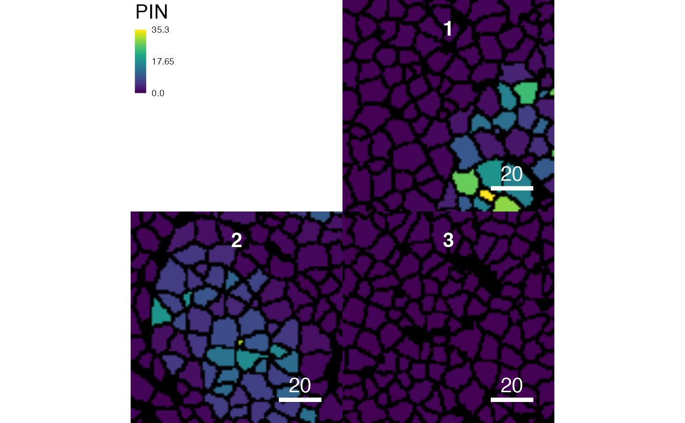

R/measureObjects.R
measureObjects.RdFor each object (e.g. cell) identified by segmentation, the
measureObjects function computes intensity features (also referred to
as basic features; e.g. mean intensity), shape features (e.g. area), moment
features (e.g. position) and haralick features. These features are returned
in form of a SingleCellExperiment object.
measureObjects( mask, image, img_id, feature_types = c("basic", "shape", "moment"), basic_feature = "mean", basic_quantiles = NULL, shape_feature = c("area", "radius.mean"), moment_feature = c("cx", "cy", "majoraxis", "eccentricity"), haralick_feature = NULL, haralick_nbins = 32, haralick_scales = c(1, 2), BPPARAM = SerialParam() )
| mask | a |
|---|---|
| image | a |
| img_id | character specifying the |
| feature_types | character vector or string indicating which features to
compute. Needs to contain |
| basic_feature | string indicating which intensity measurement per object
and channel should be used to populate the |
| basic_quantiles | numeric vector or single number indicating which quantiles to compute. Default none. |
| shape_feature | string or character vector specifying which shape
features to compute. Default |
| moment_feature | string or character vector indicating which moment
features to compute. Default |
| haralick_feature | string or character vector indicating which haralick
features to compute. Default none. Allowed are the 13 haralick features:
|
| haralick_nbins | an integer indicating the number of bins used to
compute the haralick matrix. Pixel intensities are binned in
|
| haralick_scales | an integer vector indicating the number of scales (distance at which to consider neighbouring pixels) to use to compute the haralick features. |
| BPPARAM | parameters for parallelised processing of images.
See |
A SingleCellExperiment object (see details)
The returned SingleCellExperiment object sce contains a single assay.
This assay contains individual objects in columns and channels in rows. Each
entry summarises the intensities per object and channel. This summary
statistic is typically the mean intensity per object and channel. However,
other summary statistics can be computed. When the mean intensity per object
and channel is computed (default), the assay is accessible via
counts(sce). Otherwise, the assay needs to be accessed via
assay(sce, "counts_*"), where * indicates the argument to
basic_feature.
The colData(x) entry is populated by the computed shape, moment and
haralick features per object. The prefix of the feature names indicate
whether these features correspond to shape (s.), moment (m.) or
haralick (h.) features. Default features are the following:
s.areaobject size in pixels
s.radius.meanmean object radius in pixels
m.cxx centroid position of object
m.cyy centroid position of object
m.majoraxismajor axis length in pixels of elliptical fit
m.eccentricityelliptical eccentricity. 1 meaning straight line and 0 meaning circle.
Sometimes it can be useful to describe the summarised pixel intensity per
object and channel not in terms of the mean but some quantile of the pixel
distribution. For example, to compute the median pixel intensity per object
and channel, set basic_feature = "q05" and basic_quantiles =
0.5.
computeFeatures, for detailed explanation for the computed features.
https://earlglynn.github.io/RNotes/package/EBImage/Haralick-Textural-Features.html
for more discussion on the haralick features
Nils Eling (nils.eling@dqbm.uzh.ch),
# Standard example data(pancreasImages) data(pancreasMasks) sce <- measureObjects(pancreasMasks, pancreasImages, img_id = "ImageNb") sce#> class: SingleCellExperiment #> dim: 5 362 #> metadata(0): #> assays(1): counts #> rownames(5): H3 CD99 PIN CD8a CDH #> rowData names(0): #> colnames: NULL #> colData names(8): ImageNb object_id ... m.majoraxis m.eccentricity #> reducedDimNames(0): #> altExpNames(0):# Compute only intensity feature sce <- measureObjects(pancreasMasks, pancreasImages, img_id = "ImageNb", feature_types = "basic") colData(sce)#> DataFrame with 362 rows and 2 columns #> ImageNb object_id #> <integer> <numeric> #> 1 1 824 #> 2 1 835 #> 3 1 839 #> 4 1 844 #> 5 1 847 #> ... ... ... #> 358 3 4165 #> 359 3 4167 #> 360 3 4173 #> 361 3 4190 #> 362 3 4209# Visualize on segmentation masks plotCells(pancreasMasks, object = sce, img_id = "ImageNb", cell_id = "object_id", colour_by = "PIN")